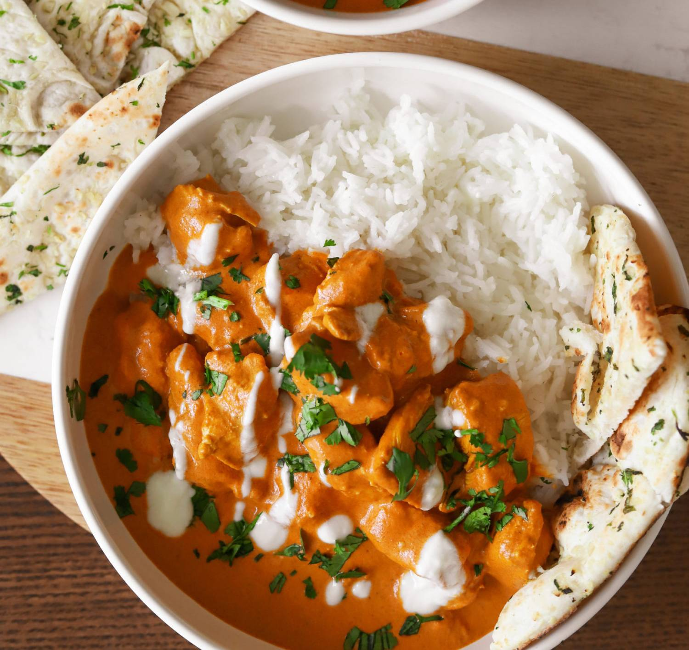

CREAMY BUTTER CHICKEN

Description
The easiest and creamiest butter chicken you'll ever make just like your favorite take out!
It only takes 30 minutes to throw all together and the whole family will love it.
Just serve it with some basmati rice and garlic naan!
Ingridients
- 1.5 pounds chicken breast about 2 large breasts cubed
- 1/4 cup plain whole yogurt
- 2 teaspoons fresh ginger minced
- 1 tablespoon fresh garlic minced
- 2 tablespoons garam masala
- 1 tablespoon coriander
- 1 1/2 teaspoon cumin
- 1 to 2 teaspoons cayenne powder to taste for spicyness
- 2 teaspoons salt
- 1/2 tablespoon turmeric
- 3 tablespoons vegetable oil or ghee
- 1/4 cup tomato paste
- 1/2 cup tomato sauce
- 1 cup heavy cream
- 1/3 cup unsalted butter
- 1 tablespoon sugar or sweetness to taste
- garnish: chopped cilantro and yogurt
Steps
- In a large bowl, add the cubed chicken breast, yogurt, fresh ginger, fresh garlic, garam masala, coriander, cumin, cayenne, salt, and turmeric. Mix together and optional, allow to marinade for at least an hour or more.
- Add 1 tablespoon of oil or ghee to a pan and cook your chicken over high heat until it has some browning and is cooked through. Do not overcook because it will continue to cook in the sauce. Set aside.
- In a saucepan, add 2 tablespoons oil or ghee over medium-high heat. Add the tomato paste and cook for about 3-4 minutes until it darkens in color.
- Add the tomato sauce, heavy cream, butter, and sugar. Whisk until smooth.
- Now add the chicken into the sauce, mix, and taste. Adjust to your liking.
- Garnish with chopped cilantro and a yogurt drizzle!
See more recipes